EXACT
Reproducible states. Systems that remain inspectable under stress.

Audio Processing Systems // Controlled Damage
Experimental audio software built from deterministic damage, hard edges, and useful failure.
01
EXACT
Reproducible states. Systems that remain inspectable under stress.
HOSTILE
Unsoftened transients, nonlinear pressure, damaged time, and deliberately hostile edges.
DAMAGED
Corruption is structural: folded into the algorithm, interface, and identity.
02
Every active public plugin repository. Infrastructure, archived repositories, and forks are excluded.
45 plugins visible
Frame fault // JUCE
ADAT Type I-inspired frame faults with controlled bit flips, burst inversions, and holds.
Codec corruption // JUCE
ATRAC1-structured transform-frame corruption with compressed-domain mutations.
Breakbeat slicer // JUCE
Deterministic generative breakbeat slicer.
Noise distortion // JUCE
Feedback-driven noise distortion with saturation, filtering, and resonant tone shaping.
Binary fault // JUCE
Binary byte-stream fault textures with frame corruption, bursts, comb structure, and drive.
Bit reduction // YUP
Deterministic bitcrusher for controlled signal destruction.
Bit reduction // JUCE
Deterministic 1–16 bit crusher with decimation, dither, and bounded error feedback.
Instrument // YUP
MIDI-triggered three-carrier detuned thrum and drone instrument.
Limiting // JUCE
Fixed-latency lookahead limiter with destructive predrive and a bounded ceiling.
Compression // YUP
Extreme three-band upward and downward compression.
Limiting // YUP
Compact lookahead peak limiter with deterministic transient control.
Instrument // YUP
MIDI-triggered comb-resonator instrument excited by deterministic bursts.
Instrument // YUP
Self-running stereo state-machine noise instrument.
Granular instrument // YUP
Deterministic MIDI-triggered granular fragmentation instrument.
Codec corruption // JUCE
Frame-based predictor and residual corruption for destructive codec-style damage.
Wavefolding // JUCE
Asymmetric wavefolder with substep nonlinear processing and deliberate alias modes.
Wavefolding // YUP
Asymmetric wavefolder for controlled nonlinear rupture.
Glitch processing // JUCE
Integer and bitwise processing with clocked holds, micro-buffer abuse, and feedback.
Crusher / gate // YUP
Crusher, gate, asymmetric clamp, and tone shaping for broken signal edges.
Noise instrument // JUCE
Self-generating crusher, feedback, chaotic modulation, and stutter instrument.
Compression // JUCE
Aggressive feed-forward compressor with detector morphing, lookahead, and bounded pump.
Flanging // JUCE
Through-zero-style dual-head flanger with polarity-aware feedback.
Codec corruption // JUCE
Realtime MP3 encode/decode corruption with worker-thread codec processing.
Bit reduction // JUCE
Bit-depth and sample-rate reduction with bandwidth limiting and stutter loops.
Codec corruption // JUCE
Realtime corruption simulation with frame repeats, drops, smearing, and pre-echo.
Comb filtering // JUCE
Four-voice fractional feedback comb for tuned metallic resonance.
Noise engine // JUCE
Deterministic self-generating and input-reactive engine for unstable spectral masses.
Instrument // YUP
MIDI-triggered exciter and tuned resonator-spine instrument.
Phasing // JUCE
Dual-bank six-stage allpass phaser with optional barberpole motion.
Phasing // YUP
Barberpole phaser for continuous spectral movement.
Pitch fault // JUCE
Destructive MIDI-targeted pitch glitch audio effect.
Compression // YUP
Feed-forward compressor with a hard, readable signal path.
Delay // YUP
Time-sheared short delay with edge-driven clipped feedback.
Instrument // YUP
Phase-distorted pulse instrument with deterministic rupture bursts.
Delay // JUCE
Fractional dual-head multi-tap delay with clocked splice events and freeze.
Instrument // YUP
MIDI-triggered binary and velvet-noise instrument with deterministic burst shaping.
Delay // YUP
Fractured feedback delay for repeatable breakage.
Instrument // YUP
MIDI-triggered frequency-shifted cross-feedback cloud instrument.
Folding / scatter // YUP
Sample-domain folding, cross-channel reflection, scatter, and feedback.
Reverb // JUCE
Metallic eight-line FDN reverb with deterministic modulation and bounded freeze.
Instrument // YUP
MIDI-triggered low-frequency pressure instrument.
Comb filtering // YUP
Fractional feedback comb for resonant metallic pressure.
Glitch distortion // JUCE
Bit crushing, sample hold, polarity flips, folding, and hard clipping.
Reverb // YUP
Hadamard feedback-delay network reverb for dense, unstable space.
Flanging // YUP
Dual-head flanger for severe, controlled motion.
03